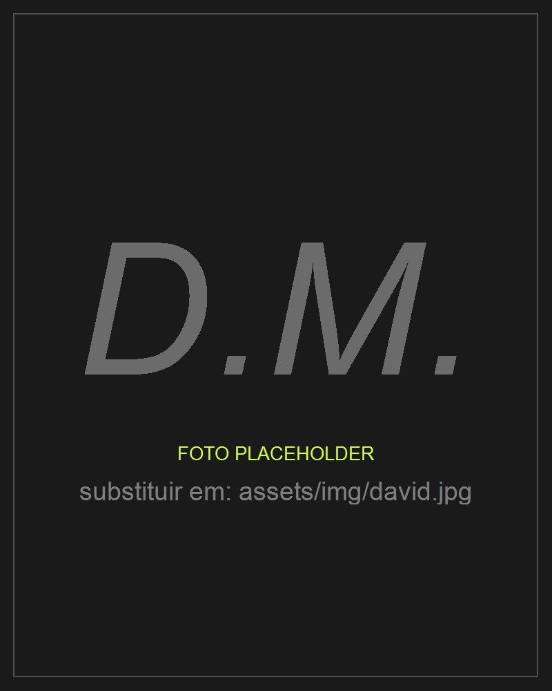

Esta página explica como o laboratório corre.
Não é um disclaimer, é uma declaração de método.
Mais do que um método, é uma metodologia.

Nada daqui nasce de um prompt solto.
Design industrial, engenharia de processos e desenvolvimento de produto.
Três princípios governam tudo o que o laboratório produz.
É uma prática de trabalho em que alguém com visão e intenção dirige uma ferramenta com enorme capacidade de execução. O resultado é co-produzido, mas a autoria criativa tem uma origem clara.
A ideia nasce em mim: o conceito, o problema, a experiência. A execução é delegada à IA: código, texto, estrutura, variantes. O julgamento é meu: o que fica, o que se rejeita, o que se itera. E a responsabilidade também: quem assina o produto, responde por ele.
É parecido com um director criativo que trabalha com uma equipa de execução muito capaz, com uma diferença: esta equipa não tem iniciativa, nem gosto, nem visão. Trabalha dentro do espaço que eu defino.
Em todos os projectos, a divisão de papéis é a mesma.
O que o produto é, que problema resolve, a quem se dirige, o que o diferencia. Decido isto antes de existir uma linha de código.
Roadmap, prioridades, o que entra e o que fica de fora. O produto avança porque decido que avança e para porque decido que está pronto.
Paleta, layout, tipografia, hierarquia, tom de voz, sensação geral. A IA propõe; eu decido o que fica.
Em cada iteração testo, uso, critico e corrijo. Os bugs que encontro e os fluxos que rejeito ficam documentados nas interacções de trabalho.
Arquitectura, tecnologias, limites e trade-offs. Quando a IA propõe uma solução, sou eu a avaliar se serve o produto a longo prazo.
Traduz uma ideia, uma descrição ou uma correcção em algo concreto: código, texto, estrutura, regras.
O que levaria dias a um programador a solo leva horas numa sessão dirigida. Mais ciclos de teste no mesmo projecto.
Quando peço opções, gera alternativas. Só têm valor depois de eu as avaliar e escolher.
Estrutura e redige o que descrevo. A substância é minha; a formalização é dela.
Não tem visão, não sabe o que o produto deve ser, não tem gosto, não valida, não decide, não assume responsabilidade. Sem direcção humana clara, produz output genérico.
A disciplina de design está a evoluir mais do que nunca.
Num projecto de jogo, por exemplo.
E quanto mais o laboratório corre, mais o método serve para partilhar o conhecimento que gera.
Esconder a IA não seria honesto para com clientes, parceiros ou público. E seria contraproducente: o valor do trabalho está na qualidade da direcção, não em esconder como foi feito.
Declarar o uso de IA não diminui o meu papel, clarifica-o. Quando se percebe o que a IA faz e o que não faz, a visão, a direcção e a validação ficam mais evidentes.
Um realizador não opera a câmara. Um arquitecto não assenta tijolos. Um director criativo não escreve o código.
A autoria é a visão, não a execução.
Não escrevo um prompt e publico o resultado. Cada output é iterado, testado, corrigido e validado várias vezes antes de ser produto.
Os outputs são gerados, não copiados de terceiros. Código, textos e estruturas são originais no contexto de cada projecto.
Não uso IA para fazer o trabalho que estaria a pagar a outra pessoa. É a minha ferramenta de produção, como o software de um designer ou o sintetizador de um músico.
Dirigir bem uma IA exige perceber de design, código, produto e experiência de utilizador. O meu background é design industrial, engenharia de processos e desenvolvimento de produto.
A IA não é uma pessoa, não tem direitos e não é co-autora em sentido jurídico. O produto é meu. A IA é uma ferramenta, sofisticada, mas ferramenta.
Qualquer produto ou documento que sai deste processo tem as mesmas quatro características.
Se um jogo tem certas mecânicas, fui eu que as defini. Se um produto tem certa identidade visual, fui eu que a escolhi. A origem é humana e documentável.
Código, redacção e estrutura foram materializados com IA, sob a minha direcção. Isto afecta a velocidade a que foi possível produzir, não a qualidade nem a originalidade.
O que chegou ao final é o que sobreviveu à minha avaliação crítica, incluindo o que rejeitei e as direcções que reverti.
Qualquer questão, comercial, criativa, técnica ou ética, é respondida por mim. A IA não assina, não garante e não responde.
Este texto pode ser citado, partilhado ou incluído na documentação dos meus projectos como declaração de método de trabalho.